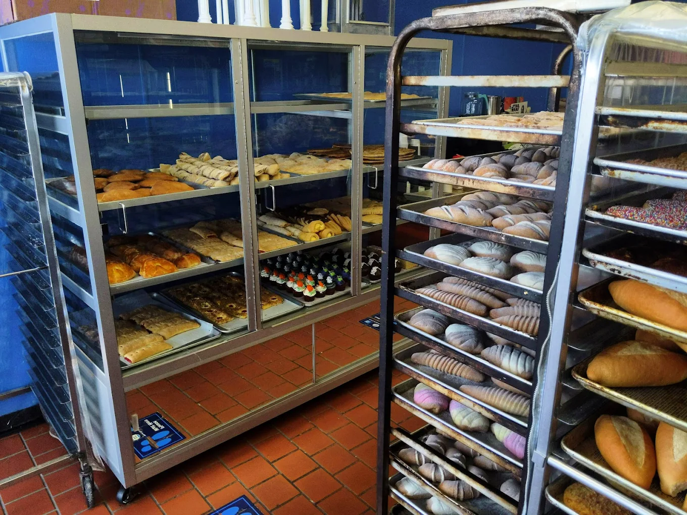
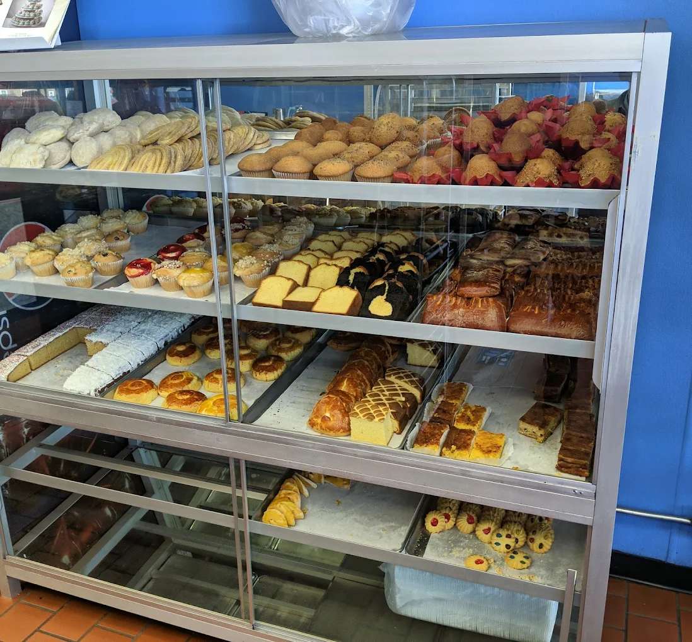
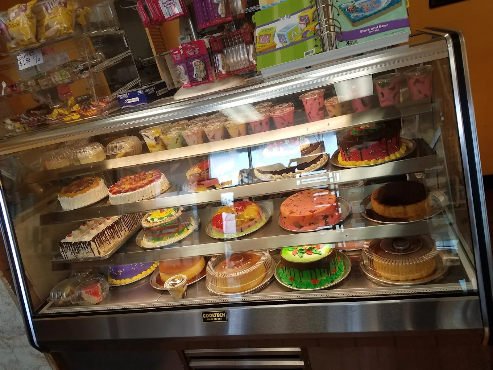

La Florencia en Mount Prospect: Tradición mexicana con pan fresco diario. Disfrute de conchas, orejas y bolillos crujientes. Especialistas en pasteles de Tres Leches para sus fiestas. Un ambiente familiar donde se sentirá en casa. ¡Calidad artesanal y sabor auténtico en cada bocado!




Visítanos o Llámanos
1839 W Algonquin Rd, Mount Prospect, IL 60056
📞 (847) 258-4452Horario: Abierto todos los días para servirle el mejor pan de la zona.
Lo que dicen nuestros clientes
★★★★★
"¡El mejor pan dulce de los suburbios! Siempre está fresco y el personal es muy amable. Las conchas son mis favoritas."
- Maria G.
★★★★★
"Los pasteles de Tres Leches son increíbles, no están demasiado dulces, están perfectos. Muy recomendados para cumpleaños."
- Juan R.
★★★★★
"Excelente variedad de pan y repostería. Un lugar limpio y con un aroma delicioso desde que entras."
- Jose L.